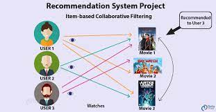

A movie recommendation system, also known as a movie recommender system, uses machine learning (ML) to predict or filter users' film preferences based on their prior decisions and actions.
Every recommender system primarily consists of two components: users and items. Users receive movie predictions from the system, and the actual movies are the products
Filtering and predicting only the movies that a matching user is most likely to wish to see is the main objective of movie recommendation systems. The user information from the system's database is used by the ML algorithms for these recommendation systems. Based on information from the past, this data is used to forecast the user in question's behavior in the future.
- Filtering based on content:
A method of filtering movies in movie recommendation systems that makes advantage of the items' data (movies). This information, which is taken from just one user, is quite important in this case. This technique uses an ML algorithm to suggest movies that are comparable to the user's past choices. Therefore, the information about the prior movie choices and likes of just one person is used to generate similarity in content-based filtering.
- Collaboration Filtering :
As the name implies, this filtering technique is based on the interactions between the relevant person and other users. For the best outcomes, the system contrasts and compares these behaviors. It combines the film choices and usage patterns of several people.
Technologies :
.png)
The goal of this project is to find the shortest path between two points in a graph. We have to implement the Dijikstra's algorithm to achieve this.
Here are the steps:
1.Create the Graph ,
2.Implement Dijkstra's Algorithm,
3.Find the Shortest Path,
4.Output the Shortest Path.
Technologies :